As it is getting closer to tip off less than 40 days of the 2023-2024 men's college basketball season.
With practices revving up this week, and preason polls looming around, it won't be long until the road to crowning a champion in April begins.
After a chaotic March Madness last season, many people are waiting to see who will be the next big time to step but also which players could shine to their brightest.
A collection of 40 figures, not in partciular order, who will mold the 2023-2024 season.
1. Zach Edey, Purdue
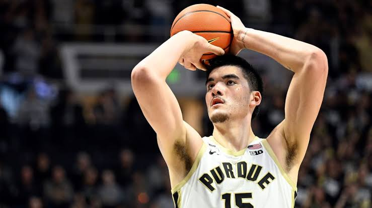The 7-foot-4, 300-pound center from Purde, who averaged 22.3 points, 12.9 rebounds, and 2,1 blocks per game while shooting 61% from the field is retruning once again after domaninating the game. Ededy's goal is to avenge his last loss which was against the 16-seed Fairleigh Dickinson and go deep in the tournament run.
2. Hunter Dickinson, Kansas
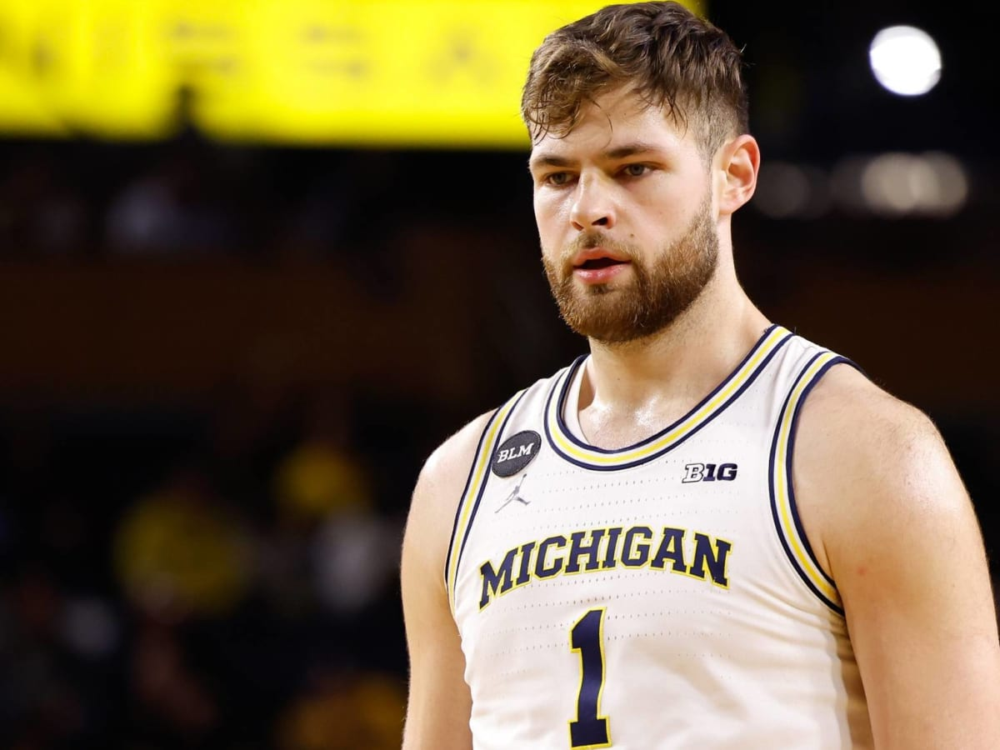After transfering from Michigian to Kanasas, there high hopes that Dickisnon can change the game as he is to help the returning point guard Dajun Harris, wing Kevin McCullar and foward K.J.Adams and their addtion Nice Timerblake
3. Kyle Filipowski, Duke
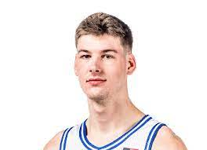As the 7-footer, who won ACC Freshman of the year, and was the only first-year player to average at leats 15 points and nine rebounds per game. Many experts in the NBA predict he will go somewhere in the 15-20 range in the draft.
4.Armando Bacot, North Carolina
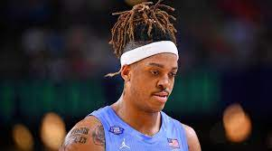As the leader known as Bacot, he is back once agin to reach the national championship. After a disspointing last season, from being ranked as the number 1 team in preason to missing the tournament, Bacot is ready to achieve history as he is already known as the all-time leading rebounder at North Carolina.
5. Tyson Walker, Michigan State
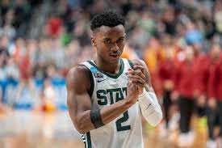In the last eight games of Michigan State, Walker averaged 18.6 points and 3.8 assist per game which helped the Spartans to reach the Sweet 16. With the motivation and more experience, will they go farther than before?
6. Tyler Kolek, Marquette
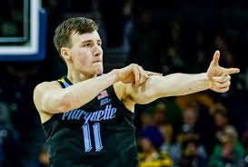Known as the Big East Player of the Year, Kolek and the Golden Eagles have championship expecataions again. With an average 18.7 points, 7.0 rebounds, and 5.0 assist, the senior program is hungry for more
7. Isaiah Collier, USC (and a note on Bronny James)...
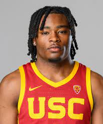As the number one ranked freshman about to start his season soon, the 6-5 guard, three-time Gerogia Mr.Basketball honoree and Naismith High School Player of the Year is ready to team up with veteran guard Boogie Ellis. With the status of Bronny James, it is still questionable to see if Bronny will step on the hardwood following his cardiac arrest incident in july.
8. Donovan Clingan, UConn
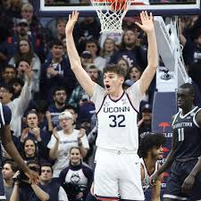The 7-2 Center is ready to take over as the main option on the interior after Adam Sanogo left the team last season. With the minium miniutes Clingan had, he averaged seven points and six rebunds.
9. Max Abmas, Texas
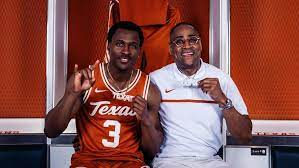With the history making by helping Oral Roberts reach the Sweet 16 for the second time in school's history back in 2021. Abmas is the active leading scorer in the country with 2,562 career points. Will we see the fifth-year guard accomplish his final chapter?
10. Terrence Shannon Jr., Illinois
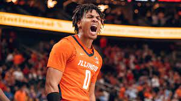By averging 17.2 points last season, with an additional frontcourt and a questionable background, can Shannon put his team on his back?
11. Ryan Nembhard, Gonzaga

As he is following his footsteps of his older brother Andrew, who was the WCC Sixth Man of the Year durinhg the Zags' national runner-up season in 2020-2021. The Zags, The Zags will go as far as Nembhard takes them this upcoming year. He averaged 12.1 points, 4.8 assists and 4.0 rebounds per game and could very well be leading a top-15 team.
12. Caleb Love, Arizona

The most fascninating tranfer storyline of the season, Love, an All-Acc Honroable Mention selection who ranks eight all-time in UNC history with 200 made 3-pointers decided to join Arizona for his final ride.
13. Justin Moore, Villanova
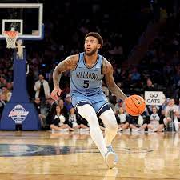From returning after an Achilles injruy last season. Moore averaged 15 points per game and was clutch in key situtaion by helpinhg the Wildcats finish the season 7-2 in their final 10 games. Now he is getting helped with a few tranfer players like Tyler Burton, TJ Bamba, Hakim Hart, and Lance Ware including sophomore Mark Armstrong
14. Kerr Kriisa, West Virginia
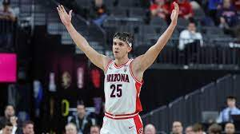With a wild offseason, Kriss is a veteran guard who put up 9.9 points and 5.1 assist per game but the trouble is his turnovers. Can he step it up in the Big 12?
15. Ryan Kalkbrenner, Creighton
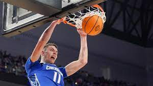The 7-1, 270 pound center is very important for the Bluejays. as the two-time Big East Defensive Player of the Year. The elite rim protector with 199 blocks in his last three season who also average 15.9 points and 6.1 rebounds is ready to help them make history.
16. Tristan Da Silva, Colorado
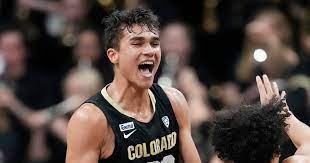With a 6-9 frame and looking like he is able to shoot down perimeter shots consistently, Da Silva is ready to become a Pac-12 title contender.
17. Xavier Johnson, Indiana
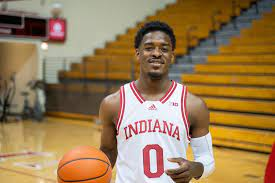Coming off a broken foot that ended his season this past December, the Indiana point guard enters his sixth season of college basketball as the clear leader of Mike Woodson's Hoosiers. With Trayce Jackson-Davis and Jalen Hood-Schifino gone, Indiana needs Johnson to lead the new-look backcourt. He should be one of the best in the Big Ten in assists and is the big certainty for an IU team that has some other questions to answer.
18. Nijel Pack, Miami
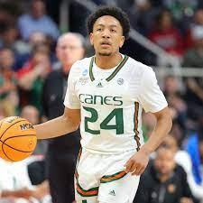With his explosiveness in, the 6-footer enters his senior year who is coming off winning NCAA Midwest Reigon Most Outstanding Playerr after he combined for 41 points in wins over Houston and Texas en route to the Final Four.
19. Wade Taylor IV, Texas A&M
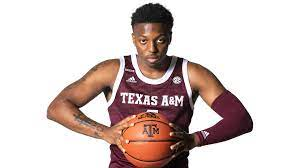After taking a major sophomore leap with the Aggies this past year and being named a consensus first-team All-SEC selection, Taylor enters his junior season as a star guard to lead Buzz Williams' squad in College Station. Taylor was one of three D-I players with 500-plus points, 125-plus assists and 50-plus steals while making 85% or better on free throw attempts.
20. Zakai Zeigler, Tennessee
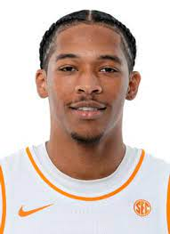A two-time SEC All-Defensive Team selection, Zeigler fits Rick Barnes' system incredibly well and is great at making plays for others, having averaged 5.4 assists with 10.7 points per game this past year. The issue: the tough, 5-9 guard's status is up in the air as he is working his way back from an ACL tear suffered last February against Arkansas. If Zeigler is healthy, he can elevate Tennessee to being an SEC title team and a Final Four dark horse contender.
21. Lamont Butler, San Diego State

He made the buzzer-beater of the college basketball season last year, lifting the Aztecs to their first-ever national championship game appearance. Well, Butler is back and will help lead SDSU's backcourt on a team that still has three of their top four scorers back from a year ago and added rising junior guard Reese Dixon-Waters from USC. Look for Butler to be a double-digit scorer in his senior season and one of the faces that comes up when next March rolls around for his heroics on college basketball's biggest stage last April.
22. Jahmir Young, Maryland
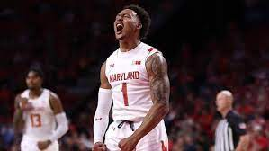Young transferred from Charlotte to the Terrapins in 2022 to help head coach Kevin Willard put Maryland basketball back on the map and taste the NCAA Tournament. Young not only experienced March Madness, but he helped guide the Terps to a first-round win over West Virginia. The fifth-year guard will be one of the best in his conference and has the burst-ability to get buckets in bunches with nine 20-plus point performances this past year.
23. Jon Scheyer, Duke
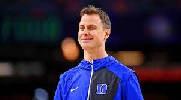While reeling in a combined seven five-star recruits in his first two years at the helm has been impressive, Scheyer stands out even more for the high-impact returning stars on his roster. After a 27-win season and an early first-weekend exit in the NCAA Tournament, there's unfinished business for Jeremy Roach, Tyrese Proctor, Mark Mitchell, Filipowski & Co. There's a lot in place that would suggest Scheyer could lead the Blue Devils to a Final Four. We'll see how he handles the critical situations of the season with a year under his belt now.
24. Rick Pitino, St. John's
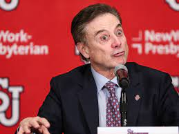There was not a more interesting offseason coaching move in the country than Pitino returning to Madison Square Garden and taking the St. John's job. Everywhere the 71-year-old Hall of Famer has gone, he's won. That's what makes this so intriguing, because the Big East-based Red Storm have been irrelevant for the better part of the last two decades and are without an NCAA Tournament win since 2000. Pitino has overhauled the roster with high-impact transfers Jordan Dingle, Chris Ledlum and Daniss Jenkins, among others. He's elevated the game count at Madison Square Garden this year to eight contests, the most for the Johnnies since the 2014-15 campaign. Pitino could very well snap that March Madness drought with a top-25 caliber team.
25. Eric Musselman, Arkansas
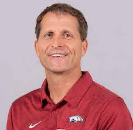It's really incredible what the 58-year-old has done in four years with the Razorbacks. I love this stat: Before 2021, Arkansas had not appeared in a Sweet 16 since 1996. Musselman has led the program to three consecutive appearances and two Elite Eight slots in the last three years. He consistently wins the transfer portal season, and this year was no different, not to mention Devo Davis and Trevon Brazile are back.
26. John Calipari, Kentucky
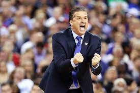Calipari has the No. 1 recruiting class in the country with Justin Edwards, Aaron Bradshaw and DJ Wagner highlighting the group. Bradshaw has a foot injury that remains concerning, which will be a situation to monitor. Having veterans Antonio Reeves and Tre Mitchell certainly helps, but here's the fact of the matter: In a world where being old is what wins in March, Calipari is still mostly relying on youth. The Wildcats haven't reached the second weekend of the NCAA Tournament in five seasons. Can Cal break that drought? The pressure is on.
27. Bill Self, Kansas
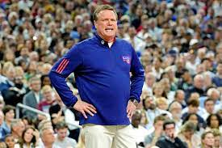He's the complete package and will have the No. 1 team in the country heading into the season. If the Jayhawks can win it all in April, Self will join Roy Williams, Jim Calhoun, Bob Knight, Adolph Rupp, Mike Krzyzewski and John Wooden as the only coaches in men's college basketball history with three or more titles.
28. Dan Hurley, UConn

The head coach of the defending national champions has a reloaded Huskies team with Clingan, Alex Karaban and Tristen Newton back, sharpshooter transfer Cam Spencer added to the fold, and the nation's No. 5 recruiting class.
29. Dusty May, FAU
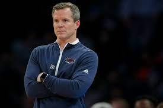What an interesting and refreshing case Dusty May is in college hoops. From serving under Bob Knight as an undergraduate manager at Indiana, to 13 years as an assistant, to getting his head coaching chance in 2018, May's journey is remarkable. The fact he kept FAU's Final Four roster together is extraordinary in the transfer portal age. He and the Owls will be firmly in the spotlight now, playing one of the best non-conference slates in the country.
30. Kyle Neptune, Villanova
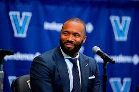It's a massive Year 2 for Neptune, who struggled in his first season at the helm of the Wildcats as they missed the NCAA Tournament for the first time since 2012. There's no shortage of talent. Can he get all the pieces to come together?
31. Adrian Autry, Syracuse
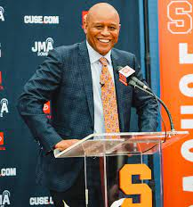When you search Adrian Autry's name on Google, one of the automated questions that comes up is: "Will he play zone defense?" That sums up what it's like to follow Jim Boeheim, whose 47-year run as Syracuse's head coach ended in March. Autry has said he will go to much more man-to-man defense and that the Orange will look different under him. Autry finally gets his chance to show that he can be a head coach in college hoops, and he has two high-level guards to work with in Judah Mintz and Notre Dame transfer JJ Starling.
32. Tom Izzo, Michigan State

The Hall of Famer has something serious cooking in East Lansing. The Spartans are coming off a really strong finish, making a 15th appearance in the Sweet 16 under Izzo. They've got all of their major pieces back and a top-tier recruiting class. Could Izzo be the one to snap the Big Ten's title curse? It's certainly possible, and the storybook feels like it still has another big chapter in store for Izzo.
33. Matt Painter, Purdue
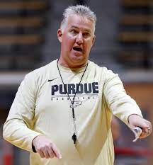He's one of the best coaches in the sport, but nationally, the narratives don't reflect that right now because of the loss last March to 16-seed FDU. That's what makes this year the most fascinating of his head coaching career. How much did he learn from that historic NCAA Tournament defeat? Can he shut up the critics and lead Edey and the Boilers on a Final Four run? He'll be under the microscope entering March Madness next year — fair or not.
34. Mick Cronin, UCLA
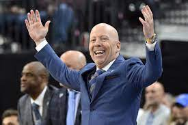Cronin has done a great job in Westwood in his four years leading the Bruins, with three consecutive Sweet 16 appearances and a Final Four run in 2021, but the 2023-24 season will be his biggest challenge yet as Jaime Jaquez and Tyger Campbell are gone. Sophomore guard Dylan Andrews, big man Adem Bona and 7-3 freshman Aday Mara, who is ranked 15th in the 247 Sports recruiting rankings, will be tasked with keeping things moving.
35. Scott Drew, Baylor
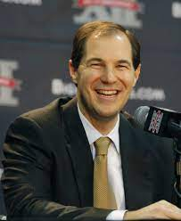There are some unknowns with the Bears heading into this season, but with the No. 4 recruiting class in the country this season, including highly touted guard Ja'Kobe Walter, plus transfers RayJ Dennis and Jayden Nunn — not to mention Jonathan Tchamwa-Tchatchoua returning — you can't count out Drew and his Bears.
36. Mike Woodson, Indiana
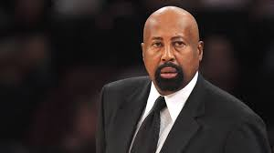The upcoming season, his third at the helm in Bloomington, will be Woodson's most challenging. He has his point guard, Johnson, back in the fold and brought in big men Kel'el Ware from Oregon and highly touted freshman Mackenzie Mgbakpo. Will the Hoosiers have enough perimeter shooting?
37. Hubert Davis, North Carolina
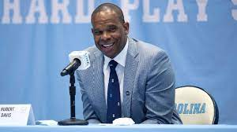His first season saw the highest of highs seemingly out of nowhere, as he led the Tar Heels to the national championship game. His second year featured the lowest of lows with dysfunction and disappointment. So, Davis has seen it all in a short period, but he did a nice job bringing in transfers that I believe will fit in well. If all the pieces connect correctly, this could be a team that contends at the top of the ACC and is in the top 20-25.
38. Kim English, Providence
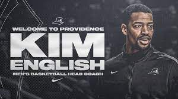He is regarded as one of college basketball's rising stars and takes over a Providence program that has an expectation to contend in the Big East and make the NCAA Tournament. He has Bryce Hopkins, a Big East Player of the Year candidate, as well as Swiss Army knife guard Devin Carter back, along with a nice set of additions to the roster. We'll see how English handles the gauntlet of the Big East.
39. Ed Cooley, Georgetown
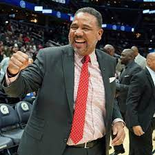January 27, 2024 will be the wildest atmosphere in college basketball when Cooley has to return to Providence after being the first coach to leave one Big East school for another this past March. Cooley was synonymous with Providence, and Friars followers feel betrayed. As for Cooley and his new stop, it's been a while since we've talked about the Hoyas in a positive light because they've been in the darkness for years. This doesn't look like an NCAA Tournament team this upcoming season, as size is a concern. But the backcourt carries upside and Cooley has proven an ability to grind out wins in the Big East. Regardless, Georgetown is no longer irrelevant.
40. Kelvin Sampson, Houston
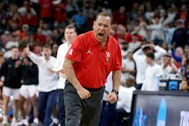The Big 12 has already been college basketball's best conference in recent years. Add in a program that prides itself on toughness and physicality, and it only adds to the rich competitive nature of the league. It's going to be fascinating to see how the Cougars, who look like a top-10 team, fare in their inaugural year in the Big 12. Life without Marcus Sasser presents challenges, but Sampson made additions with Baylor transfer LJ Cryer and Temple transfer Damian Dunn to join Jamal Shead in the backcourt.
Duke vs. Michigan State | Champions Classic | Chicago (Nov. 14):
Kansas vs. Kentucky | Champions Classic | Chicago (Nov. 14)
UConn at Kansas | Allen Fieldhouse | Lawrence, KS (Dec. 1)
Purdue vs. Gonzaga | Maui Invitational | Honolulu (Nov. 20)
Arizona at Duke | Cameron Indoor Stadium | Durham, NC (Nov. 10)
Purdue vs. Alabama | Hall of Fame Series | Toronto (Dec. 9)
Arizona vs. Michigan State | Acrisure Classic | Palm Desert, CA (Nov. 23)
UConn vs. North Carolina | Jimmy V Classic | Madison Square Garden (Dec. 5)
UConn vs. Gonzaga | Seattle Tip-off | Spokane, Wash. (Dec. 15)
Illinois vs. Florida Atlantic | Jimmy V Classic | Madison Square Garden (Dec. 5)
| Player or Coaches' Name | School's Name |
| 1. Zach Edey | Purdue |
| 2. Hunter Dickinson | Kansas |
| 3. Kyle Filipowski | Duke |
| 4. Armando Bacot | North Carolina |
| 5.Tyson Walker | Michigan State |
| 6.Tyler Kolek | Marquette |
| 7.Isaiah Collier(and a note on Bronny James) | USC |
| 8.Donovan Clingan | UConn |
| 9.Max Abmas | Texas |
| 10.Terrence Shannon Jr | Illinois |
| 11.Ryan Nembhar | Gonzaga |
| 12.Caleb Love | Arizona |
| 13.Justin Moore | Villanova |
| 14.Kerr Kriisa | West Virginia |
| 15.Ryan Kalkbrenner | Creighton |
| 16.Tristan Da Silva | Colorado |
| 17.Xavier Johnson | Indiana |
| 18.Nijel Pack | Miami |
| 19.Wade Taylor IV | Texas A&M |
| 20.Zakai Zeigler | Tennessee |
| 21.Lamont Butler | San Diego State |
| 22.Jahmir Young | Maryland |
| 23.Jon Scheyer | Duke |
| 24.Rick Pitino | St. John's |
| 25.Eric Musselman | Arkansas |
| 26.John Calipari | Kentucky |
| 27.Bill Self | Kansas |
| 28.Dan Hurley | UConn |
| 29.Dusty May | FAU |
| 30.Kyle Neptune | Villanova |
| 31.Adrian Autry | Syracuse |
| 32.Tom Izzo | Michigan State |
| 33.Matt Painter | Purdue |
| 34.Mick Cronin | UCLA |
| 35.Scott Drew | Baylor |
| 36.Mike Woodson | Indiana |
| 37.Hubert Davis | North Carolina |
| 38.Kim English | Providence |
| 39.Ed Cooley | Georgetown |
| 40.Kelvin Sampson | Houston |